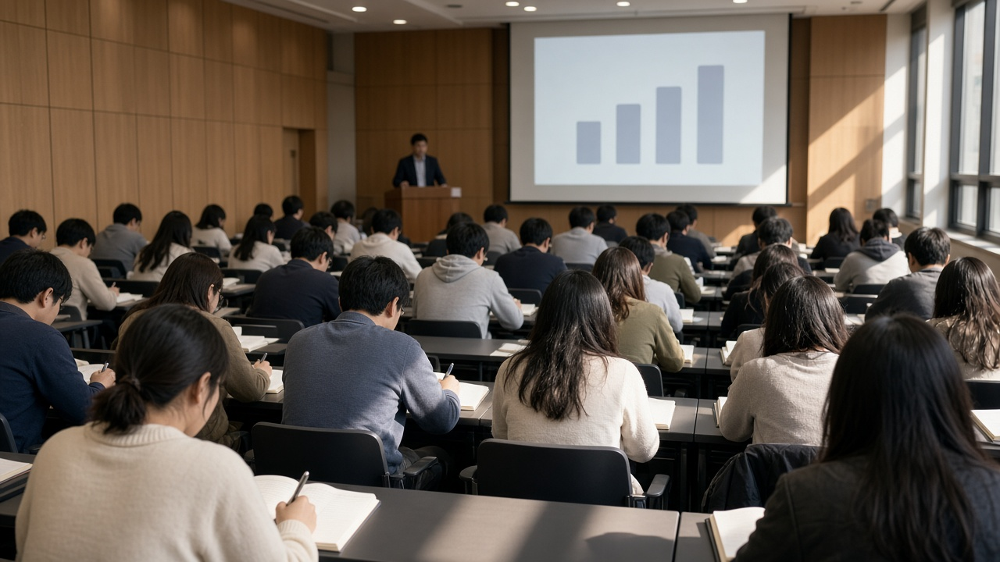

청년 경제·금융 강연회 11월 24일과 28일 열려요, 케이무크 신청 마감과 1대1 재무상담 정리

사회생활을 막 시작하면 신용점수, 대출, 카드값 관리처럼 아무도 제대로 알려 주지 않았던 돈 문제가 한꺼번에 밀려와요.
유튜브나 커뮤니티 글은 넘쳐나지만, 어디까지 믿어야 할지 헷갈릴 때가 많죠.
이럴 때 참고할 만한 공공 강연이 이번 달 서울과 경기에서 열려요.
교육부와 국가평생교육진흥원이 11월 24일과 11월 28일에 케이무크와 연계한 청년 경제·금융 소통 강연회를 연다고 11월 11일 발표했어요.
언제 어디서 열리는지, 신청은 언제까지인지, 현장에 못 가면 어떻게 들을 수 있는지 차례로 정리해 볼게요.
이번 강연회가 어떤 자리인지
케이무크는 대학 수준의 강좌를 누구나 온라인으로 무료로 들을 수 있게 정부가 운영하는 한국형 온라인 공개강좌예요.
이번 강연회는 이 케이무크 사업과 연계해서, 사회 초년생을 비롯한 청년들이 실생활에 필요한 금융 지식을 직접 듣고 질문할 수 있도록 대면 행사로 마련됐어요.
교육부 자료를 보면 강연회는 모두 네 차례로 기획됐는데, 그중 두 차례는 이미 열렸고 남은 두 차례가 11월 24일과 11월 28일이에요.
참여 신청은 케이무크 누리집에서 받고 있어요.
특정 금융 상품을 소개하는 자리가 아니라 신용관리와 금융사기 예방, 경제 흐름을 이해하는 교육 행사라는 점을 먼저 알아 두면 좋아요.
11월 24일 서울 강연과 1대1 재무상담
1차 강연회는 11월 24일 화요일 오후 2시부터 5시까지 서울 강서구에 있는 서울시 어울림플라자에서 열려요.
규모는 120명 안팎이고, 신청 기간은 11월 11일부터 11월 20일 금요일까지예요.
금융감독원 금융교육 교수가 신용점수와 연체, 대출과 부채 관리처럼 청년에게 꼭 필요한 신용관리 방법을 강의해요.
이어서 대구한의대 경찰행정학과 교수가 청년이 걸려들기 쉬운 금융사기 유형과 예방법을 다룰 예정이에요.
눈여겨볼 부분은 현장 재무상담이에요.
서민금융진흥원의 찾아가는 캠퍼스 상담소와 연계해 오후 1시부터 5시까지 1대1 맞춤형 재무상담도 함께 운영해요.
대출이나 연체 때문에 고민이 있다면 강연 시작 전에 조금 일찍 가서 상담부터 받아 보는 것도 방법이에요.
11월 28일 하남 강연은 신청 마감이 더 빨라요
2차 강연회는 11월 28일 토요일 오후 2시부터 5시까지 경기 하남시의 카페 라누벨에서 열려요.
이창용 전 한국은행 총재가 청년을 위한 거시경제학, 한국 경제의 구조와 미래를 주제로 강연하고 청년들의 질문에 직접 답하는 시간을 가져요.
EBS 위대한 수업과 함께하는 자리이고 규모는 100명 안팎이에요.
여기서 주의할 점은 신청 기간이에요.
2차 강연은 11월 6일부터 이미 신청을 받기 시작했고 11월 17일 화요일에 마감돼요.
1차보다 사흘 먼저 끝나니, 두 강연을 모두 듣고 싶다면 하남 강연부터 먼저 신청해 두는 게 좋아요.
현장에 못 가도 온라인으로 들을 수 있어요
평일 낮이라 시간을 내기 어렵거나 지역이 멀어도 너무 아쉬워할 필요는 없어요.
교육부는 이번 강연 영상을 온라인 강좌로 만들어 케이무크 누리집에서 언제든 볼 수 있게 제공하겠다고 밝혔어요.
EBS 위대한 수업은 EBS 1TV에서 월요일부터 금요일 밤 11시 45분에 방송으로도 볼 수 있어요.
예금자보호제도를 운영하는 예금보험공사와 함께 청년을 위한 금융 첫걸음이라는 온라인 강좌도 새로 만들고 있어요.
이 밖에도 인공지능, 기초과학, 첨단기술, 인문학 분야의 새 케이무크 강좌가 11월 말부터 차례로 공개될 예정이에요.
이수증과 학점 인정은 이렇게 확인하세요
케이무크 강좌를 끝까지 들으면 이수증이나 디지털 배지라고 부르는 디지털 증명서를 받을 수 있어요.
대학생이라면 소속 대학의 학점 인정 기준에 따라 정규 학점으로도 인정받을 수 있어요.
교육부가 밝힌 2025년 조사 결과를 보면 141개 대학이 3,120개 강좌 가운데 1,320개, 약 42.3퍼센트의 이수 결과를 정규 학점으로 인정했어요.
다만 인정 여부와 범위는 대학마다 다르니 듣기 전에 학과 사무실이나 학사 안내에서 먼저 확인하는 게 안전해요.
강연회와 강좌 관련 문의는 국가평생교육진흥원 케이무크 운영실 02 3780 9961로 할 수 있고, 일정은 사정에 따라 바뀔 수 있으니 신청 전에 케이무크 누리집 공지를 한 번 더 확인해 보세요.
참고 자료 교육부 2026년 11월 11일 보도자료 케이무크로 청년 경제·금융 이해력 높인다와 붙임 강연회 개최 개요 및 2026학년도 케이무크 신규 개발 강좌 목록, 케이무크 누리집 www.kmooc.kr
태그 케이무크 청년금융교육 신용관리 금융사기예방 재무상담 서민금융진흥원 무료강의 평생교육 디지털배지 학점인정